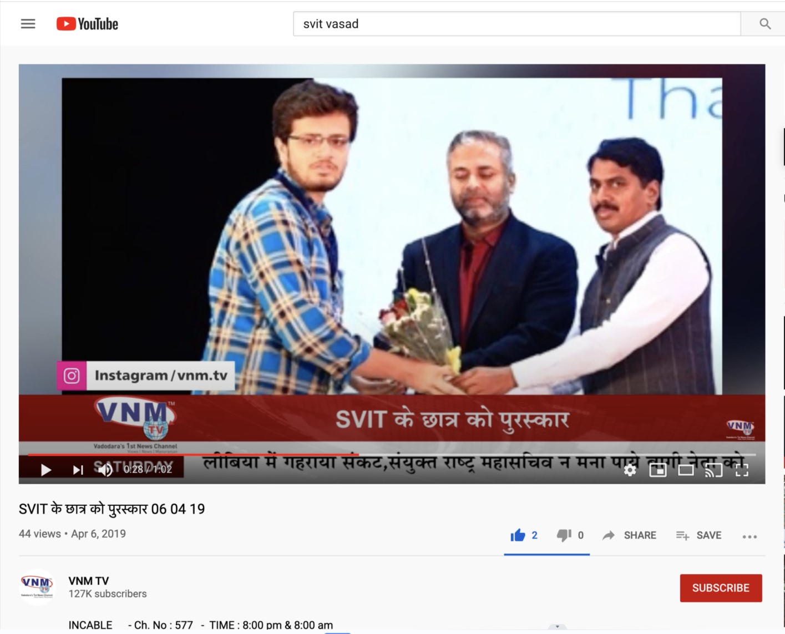
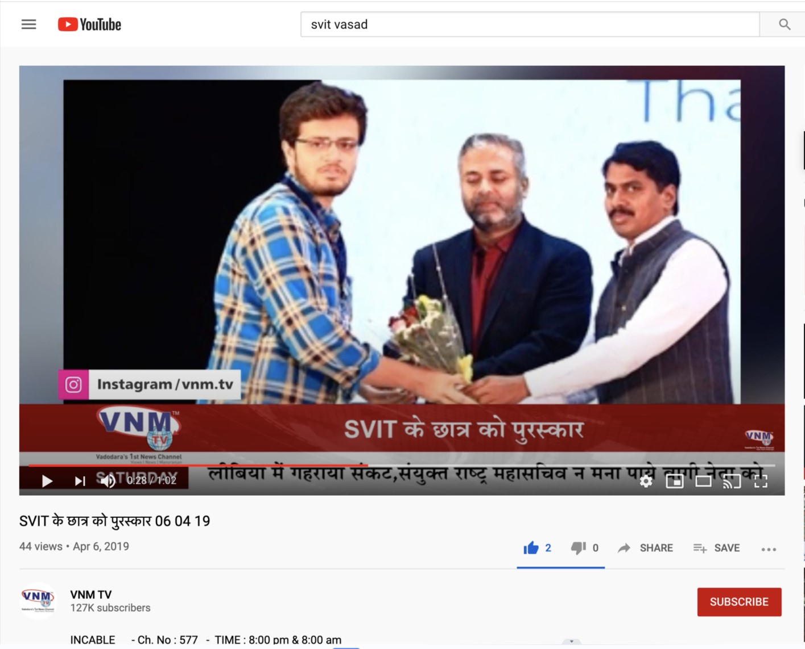

About Me
I'm Shiv Vyas—IoT Engineer, Data Scientist, and (as Barney Stinson would say) wait for it... a start-up founder who discovered that designing affordable vehicle security systems can be so secure, they even lock out success! But every great journey has its plot twists, and mine is filled with algorithms and ambition.
My passion lies in developing intelligent systems that make a real-world impact. Whether I'm crafting AI models or strategizing in chess, I love playing with algorithms and pushing technological boundaries.
Fueled by tea and a love for Python, and as a believer in Carl Sagan’s words, "Somewhere, something incredible is waiting to be known," I’m on a constant quest for innovation that can change the world.
 
